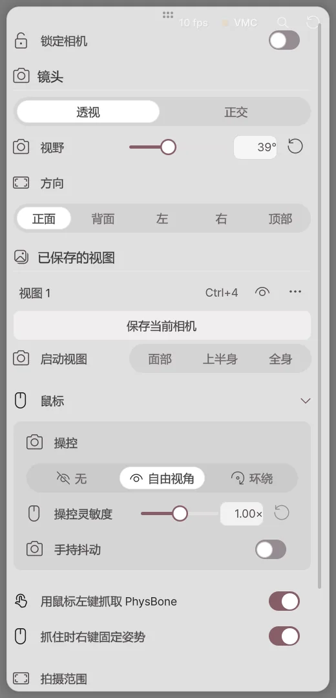

开始
按照先调用角色、连接我的动作、再输出广播画面的顺序开始。
安装和运行
- 从 BOOTH 购买记录中获取 Avatar Live ZIP 文件。
- 将压缩文件全部解压到所需的文件夹。
- 运行文件夹中的
AvatarLive.exe。 - 在产品激活界面输入购买时收到的信息，然后点击激活。
需要 Windows 10 / 11 64 位和支持 DirectX 11 的显卡。想要跟随面部和手部动作，请准备摄像头；想要用声音控制嘴部动作，请准备麦克风。
导出角色
将 Unity 项目中的角色制作成可以在 Avatar Live 中打开的 .vavatar 文件。如果已经有 .vavatar 或 .vrm 文件，请前往 打开角色。
安装 Exporter
- 点击下方按钮，将存储库添加到 VCC 或 ALCOM。在打开的窗口中确认添加。
- 在角色项目中添加 Curious Bobby - Avatar Exporter。
- 在 Unity 中打开该项目。
如果按钮无法打开，请复制下方地址，粘贴到 Settings → Packages → Add Repository。
https://raw.githubusercontent.com/zzubi-works/avatar-exporter/main/index.json
如果是以 .unitypackage 接收的话，可以在 Unity 的 Assets → Import Package → Custom Package… 中导入。
创建角色文件
- 在 Unity 顶部打开 Curious Bobby → Avatar Exporter。
- 将 Hierarchy 的角色拖入角色栏。
- 设置显示名称和保存文件夹。
- 点击导出 .vavatar。
- 完成后，点击查看文件以确认结果文件。
- 在 Avatar Live 的打开角色中加载该文件。
| 项目 | 如果更改会怎么样？ |
|---|---|
| 角色 | 请选择要导出的角色。 |
| 显示名称 | 将显示在 Avatar Live 列表中的名称。 |
| 表情剪辑 | 一起加入所选的表情动画。即使没有也可以导出。 |
| 保存文件夹 | 放置已完成的 .vavatar 文件的文件夹。 |
| .vavatar 导出 | 使用所选角色创建文件。 |
| 查看文件 | 打开包含已完成文件的文件夹。 |
修改角色时
在Unity中修改服装或头发等之后，再次导出相同的角色。在Avatar Live中加载新文件后，修改过的外观将会被反映出来。
导出失败时
- 在 Unity 中检查角色本身是否没有错误。
- 请确认正在使用的制作工具和导出器，然后重新导出。
- 文件已经生成，但如果部分是粉色的或消失了，请检查原始项目的材质、着色器以及该部件的开启状态。
角色、服装、道具的播放及分享许可范围遵循各制作者的条款。请确认 内容使用条件。
1. 打开角色

- 点击打开角色或将文件拖到窗口中。
- 从角色列表中选择要使用的角色。
- 点击开始 Avatar Live。出现场景列表时，选择要使用的场景。
| 拥有的文件 | 待办事项 |
|---|---|
.vavatar |
原样调用。 |
.vrm |
原样加载。支持 VRM 0.x 和 1.0。 |
| Unity 身份项目 | 使用 导出角色 创建 .vavatar 后加载。 |
2. 连接我的动作

- 点击左侧设备。
- 在网络摄像头列表中选择要使用的相机，并打开标题右侧的开关。
- 面向屏幕点击正面校准。
- 如果想用声音控制嘴巴动作，也选择麦克风并打开开关。
如果使用 iPhone 或外部追踪器，请在 设备 中查看连接方法。
3. 设置背景和构图

- 服装·表情：在左侧菜单选择。
- 脸部·手部动作：在动作中调整。
- 背景·灯光：在工作室中选择。
- 构图：在底部摄像头工具栏选择脸部·半身·全身。
按 F1 可以隐藏菜单，只看虚拟形象。再次按下可以显示菜单。
4. 连接到直播软件
| 使用目的 | 打开位置 |
|---|---|
| 将虚拟形象导入此 PC 的 OBS | Spout2 连接 |
| 发送视频到其他 PC 的 OBS | NDI 连接 |
| 用作 Discord·Zoom 摄像头 | 虚拟摄像头 |
| 共享游戏和角色 | 屏幕共享 |
| 与朋友的角色共同直播 | 远程合播 |
| 观众事件触发角色反应 | 直播 |
在开始直播之前，请确认 OBS 或接收方的实际画面。我的工作屏幕和输出摄像头的构图可能不同。
角色库
注册角色文件，选择要使用的角色和起始场景。
开始屏幕
| 按钮·项目 | 点击后会怎么样？ |
|---|---|
| 打开角色 | 将 .vavatar 或 .vrm 文件添加到列表中。也可以将文件拖放到窗口中。 |
| 最近 | 显示最近使用的角色。 |
| 文件夹 | 显示指定角色文件夹的文件。 |
| 导入的 | 显示通过导入的库导入的角色。 |
| 角色缩略图 | 选择要开始的角色。 |
| 默认指定 | 设置在以默认角色开始时使用的角色。 |
| 预览 | 查看所选角色的外观。 |
| 场景列表 | 选择要开始的舞台构成。 |
| 开始 Avatar Live | 使用所选角色和场景打开主屏幕。 |
选择要开始的设备

- 摄像头：打开右侧开关时，将使用启动时选择的网络摄像头。
- 麦克风：开启后将使用启动时选择的麦克风进行对嘴型同步。
- 脸·手：选择跟踪各部位的方式。执行后也可以在设备上更改。
用于下一次运行的角色
| 启动设置 | 下一次运行时 |
|---|---|
| 每次询问 | 在启动画面直接选择角色。 |
| 上次角色 | 使用上次使用的角色启动。 |
| 默认角色 | 使用设定的默认角色启动。 |
运行中更换
- 点击左上角的角色名称。
- 在列表中选择要更换的角色。
- 新文件通过“添加角色文件”导入。
要替换现有角色，请使用此列表。在同一场景中放置更多角色的角色添加是工作室的单独功能。
启动不顺时
按住 Shift 启动程序，可以使用不启用摄像头和麦克风的安全启动。确认设备问题后，再逐一在设备上开启。
主屏幕
从左侧选择设置，在中间查看并调整角色。
左侧菜单
| 菜单 | 可进行的操作 |
|---|---|
| 角色菜单 | 应用服装、表情、手势以及保存的姿势。 |
| 设备 | 连接摄像头、麦克风、iPhone、追踪器。 |
| 动作 | 调整面部、身体和手部的移动幅度与流畅度。 |
| 演播室 | 布置背景、灯光、房间、道具、角色、拍摄摄像机，并拍摄照片和录制视频。 |
| 输出 | 连接 OBS、虚拟摄像头、屏幕共享。 |
| 直播 | 让角色对 Twitch·CHZZK·SOOP·Discord 事件做出反应，并开启远程联播会话。详细内容请查看直播。 |
| 设置 | 更改窗口、性能、语言、快捷键、更新。 |
使用设置面板
- 卡片标题：点击展开或折叠详细设置。
- 开关：开启或关闭该功能。与展开标题无关。
- 固定：即使在面板外点击，设置面板也不会折叠。
- 数字：可以直接输入或通过旁边的滑块调整。
- 拖动卡片标题：将常用卡片移动到上方。
- 顶部放大镜：搜索设置名称，点击结果即可直接跳转。
摄像机工具栏

| 项目 | 更改内容 |
|---|---|
| 脸部·上半身·全身 | 将选定的虚拟形象显示在屏幕上的对应大小。 |
| 已保存视图 | 返回保存的位置和方向。 |
| 保存视图 | 保存当前看到的构图。 |
| 锁定相机 | 锁定构图以防鼠标改变。虚拟形象仍然会移动。 |
| 视野角度 | 降低时虚拟形象看起来更大，提高时周围环境看得更广。 |
| 固定·自由·轨道 | 改变用鼠标移动工作屏幕的方式。 |
在设置面板上滚动滚轮可以滚动设置。在虚拟形象可见区域滚动时会改变相机距离。
工作屏幕与直播屏幕
| 屏幕 | 观看者 | 移动时 |
|---|---|---|
| 场景视图 | 我正在编辑的工作屏幕 | 我的操作视点会改变。如果场景视图正在直播，广播也会跟着改变。 |
| 工作室相机 | 选定拍摄相机的观众屏幕 | 根据该相机的设置，构图会改变。 |
如需在保持直播构图的同时编辑灯光或道具，请选择工作室相机作为直播目标。
常用操作
| 操作 | 结果 |
|---|---|
| F1 | 隐藏菜单。再次按下则显示。 |
| Ctrl+Z | 撤销支持的编辑操作一步。 |
| 顶部重置 | 恢复跟踪、手部姿势和物理运动。 |
| 左下角电源 | 退出程序。 |
包括更换衣服和位置的全部重置适用范围更大。如果只是头发短暂打结，请先使用普通重置。
版本与退出
Basic 版本用于个人·非公开使用，Pro 版本用于直播·视频公开·商业用途。请在 各版本功能 中确认所需功能。
用左下角的电源按钮退出程序。如果窗口的 X 按钮设置为最小化到托盘，直播将继续。X 按钮的操作可在设置 → 窗口中更改。